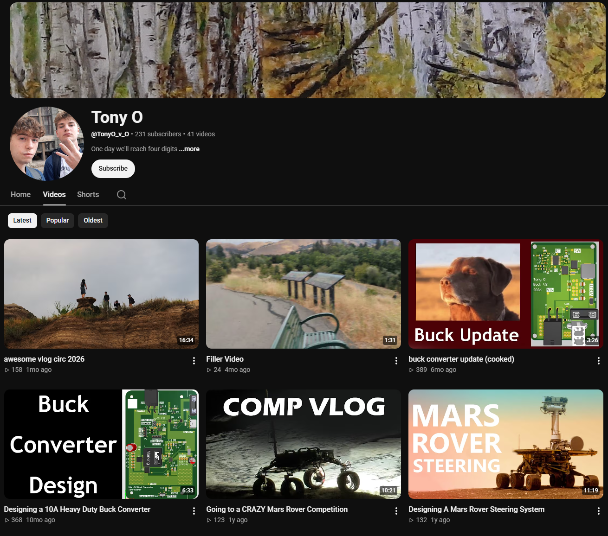

YouTube
I've been putting my personal projects on YouTube for a while now.
I really like making videos as a creative outlet and have been doing so since I was 10, starting
with stop-motion creations with marshmallow characters. There are videos about
my projects, and then some are unrelated (like the robotics competition trip vlog).
Some people might say that having this on my portfolio is unprofessional. In my
opinion, those people are silly. I paid 20$ for this domain name and I'll decide
what goes on my website thank you very much.

Link to Channel